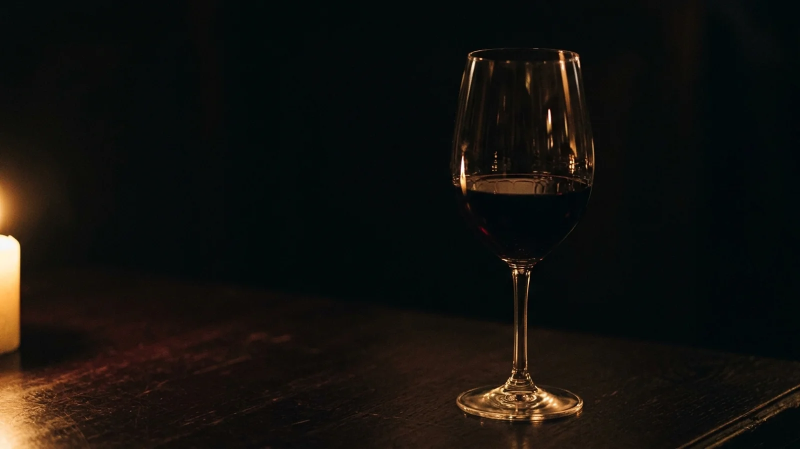
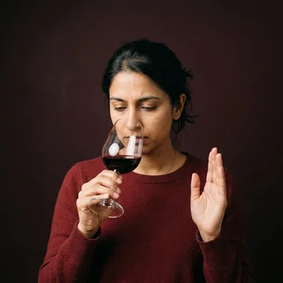

4,200 tasting-note templates
Every note a professional has ever written, sorted by how confident you want to sound. Wet slate. Forest floor after a light argument. A whisper of pencil shavings. Drag one onto the page and nod slowly.

Legs is a design platform for amateur sommeliers. Pick a template, drop in three adjectives, and serve a tasting note that sounds like it cost more than the bottle.
Fig. 1. A $9 wine, described at length.
11,400 dinner parties this quarter. Nobody has asked what the wine actually tastes like.
Legs does to tasting notes what a good font does to a résumé. The content stays roughly the same. People believe it more.
Every note a professional has ever written, sorted by how confident you want to sound. Wet slate. Forest floor after a light argument. A whisper of pencil shavings. Drag one onto the page and nod slowly.
Choose five signature descriptors and Legs applies them to every wine you drink, including the ones that came in a box. A palate is mostly consistency. Ours is locked.
Photograph a $9 bottle. Legs adds a crest, a château and the word Réserve in gold foil. The wine is unchanged. Your guests are not told.
All three were photographed before, during and after a Brand Kit session. These are the during.
“I used to say ‘this one’s nice’. Now I say ‘bright acidity with a long, apologetic finish’ and people stop talking to me, respectfully.”
“I made a tasting note for tap water. My brother-in-law asked where he could buy it.”

“The Brand Kit gave me cedar, tension, graphite, rain and restraint. I have not had a drink since that didn’t fit.”
Three plans, served by the glass or the case. Our sommelier recommends the middle one, as sommeliers do.
For people who currently say ‘fruity’.
For hosts who decant things that do not need decanting.
For book clubs that stopped reading.
Prices exclude corkage. Legs does not supply, taste or have opinions about wine.
Open the editor, drag in some forest floor, and watch your Believability score do something you did not ask for.
open the demo →